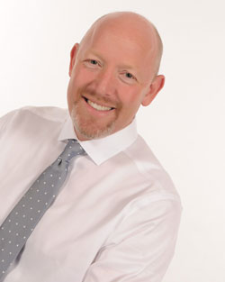

About Us
Dr. Brian Van Wagenen, D.C.
Philosophy
 Dr. Brian Van Wagenen has specialized training far beyond most chiropractors. Using a whole-body approach, he helps people find relief from pain, increased energy, proper digestion, hormonal balance, and wellness for life. In addition to providing high quality chiropractic adjustments, Dr. Brian uses applied kinesiology muscle testing to determine weaknesses and total body functionality, as well as hormone therapy management and nutritional counseling to aid in overall health. Dr. Brian often treats patients who have not had good success with other chiropractors, as well as those who have had some success but have hit a roadblock and can’t fully progress to wellness. Using his specialized training, he uncovers underlying conditions that most people don’t even know were contributing to their pain or other problems, such as indigestion or liver or gallbladder functional problems.
Education
Dr. Brian is a graduate of the Texas College of Chiropractic. His focus of study included Applied Kinesiology and treating challenging problems. Dr. Brian has completed thousands of hours of specialized training in various techniques, including Applied Kinesiology, Diversified Technique, Sacro-Occipital Technique, Neuro-Emotional Technique, Nutritional Response Testing, Total Body Modification, Activator, Percussion, and others. You may not know what all of these things are, but Dr. Brian will take the time to explain each technique as he determines your individual needs and develops your treatment plan.
Experience
Dr. Brian has been practicing since 1994. During this time, he’s successfully treated hundreds of patients with acute or chronic chiropractic, musculoskeletal, nutritional and hormonal conditions. Dr. Brian loves helping people with challenging problems who haven’t found success elsewhere.
Personal (In His Own Words)
I have been happily married for 25 years to my beautiful wife Val and we are the parents of seven wonderful children. I was born and raised in Clovis, California where I spent the first 19 years of my life. At 19, I served a two-year mission for my church in the North of England. Then I went to Brigham You University where I met my wife Val; who I have been married to for almost 25 years. I then finished my undergraduate studies at Fresno State University, before going to Texas Chiropractic College. My wife and I have seven outrageously lovable children and their names are Jon(26), Lauren(24), Jamie(23), Mckenzie(19), Jake(16), Michael(14), and Julia(9). We love to spend time together and you can imagine it is very busy at our house. In our free time we find joy spending time at the lake, watching movies, and going on trips together. I have many projects around the house and enjoy fixing things, exercise, and working with wood. MY FIRST EXPOSURE TO CHIROPRACTIC came early in my life when I suffered extreme pain due to an accident. At the time, there was little known as how to handle this type of problem. My Uncles were medical doctors and prescribed pain pills and this worked for a while. The pain soon returned worse than before and so my dad suggested I visit a Kinesiology chiropractor since he had been helped in the past. My M.D. uncles were skeptical of me going to a Kinesiologist chiropractor but my dad’s love and experience prevailed. The first treatment relieved so much of my pain I just simply couldn’t believe it. And with every treatment I felt better and better and a sense of joy increased with every visit. This aroused deep within me a profound urge to help others! I chose to devote my life to natural healing because it’s exhilarating to watch the body heal itself-mine or someone else’s body! I TRULY BELIEVE THE BODY HAS GREAT POWER TO HEAL ABOUT ANYTHING IF THE STUMBLING BLOCKS ARE PROPERLY REMOVED. I am grateful I chose this profession because I have passion that continues to grow each day when working with patients who are committed to the healing process and becoming truly healthy. I love to educate and inspire patients to strive for and achieve optimal health. I HAVE COMPLETE FAITH IN THE PRINCIPLES OF ALTERNATIVE HEALING AND KNOW THAT OUR BODIES HAVE UNLIMITED CAPACITY TO IMPROVE AND HEAL THEMSELVES. I BELIEVE WITH ALL MY HEART IN HOW I PRACTICE AND ALWAYS STRIVE TO IMPROVE IT. I love to see people get well and the miracles I see everyday. I hope to be able to help you and your family and friends. In 2007 I left a fulfilling and successful after 13 years in Austin Texas. I moved to Roseville 6 years ago to be closer family, and the recreational things this area has to offer. I have loved this area and my practice has been much like family to me. You grow to love the people and the patients you care for. I look forward to getting to know you and gaining your trust. MY DESIRE FOR MY OFFICE IS TO HELP AS MANY PEOPLE AS POSSIBLE GET WELL AND STAY WELL. What seems to make my practice unique is that I use nearly every available cutting edge technique. I attend alot of post graduate courses each year (i.e.opproximately 70-100 hours per year) in every part of the country learning the lattest techniques in healing the body. MY PERSONAL PROMISE TO YOU IS THAT I WILL GIVE YOU MY 110% IN YOUR PROCESS OF HEALING AND GIVE YOU MY BEST ATTENTION IN HELPING YOU ACHIEVE OPTIMUM WELLNESS SO YOU CAN FEEL GREAT AND HELP THOSE AROUND YOU FEEL BETTER TOO. No problem is too big. If you are willing to participate , I love a challenge.